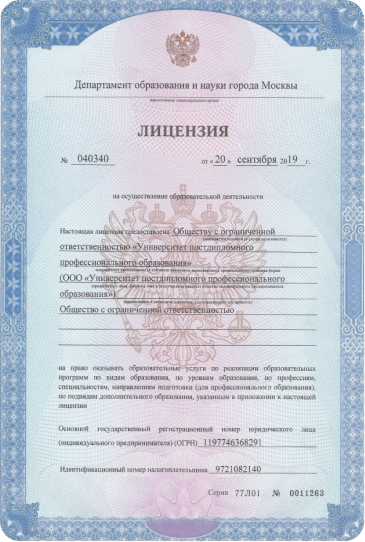
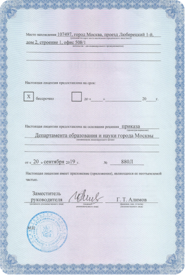
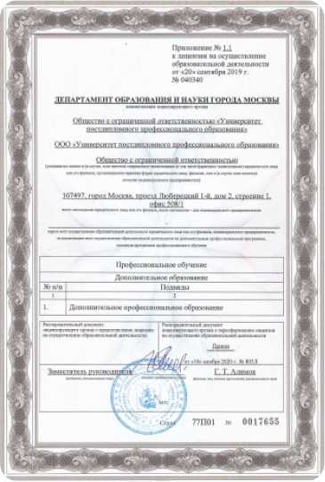

<!DOCTYPE html>
<html lang="ru">
	<head>
		<meta charset="UTF-8" />
		<meta name="viewport" content="width=device-width, initial-scale=1.0" />

		<link rel="stylesheet" href="css/libs.min.css" />
		<link rel="stylesheet" href="css/style.min.css" />

		<title>Университет</title>
	</head>
</html>


<body>
  <div class="wrapper">
    <header class="header">
	<div class="container">
		<div class="header__wrapper">
			<div class="header-top">
				<a href="#" class="header__logo logo">
	
	<span
		>Университет постдипломного <br />
		профессионального образования</span
	>
</a>


				<div class="d-none d-lg-flex align-items-center">
					<ul class="header-top-menu">
						<li class="header-top-menu__item"><a href="#">Правовые документы</a></li>
						<li class="header-top-menu__item"><a href="#">Отзывы</a></li>
						<li class="header-top-menu__item"><a href="#">Частые вопросы</a></li>
					</ul>

					<a href="#" class="header-phone phone">+7 (495) 513-11-12</a>
					<div class="header-top-menu-buttons">
						<a href="#" class="header-top-menu-buttons__item">
							<svg width="36" height="36" viewBox="0 0 36 36" fill="none" xmlns="http://www.w3.org/2000/svg">
								<path
									d="M5.105 20.8459C7.73684 23.4624 12.3267 27.0891 17.5487 27.0891C22.7706 27.0891 27.3596 23.4624 29.9915 20.8459C30.6856 20.1559 31.0338 19.8097 31.2548 19.1322C31.4125 18.6488 31.4125 17.7813 31.2548 17.2979C31.0338 16.6203 30.6856 16.2741 29.9915 15.584C27.3596 12.9675 22.7706 9.34082 17.5487 9.34082C12.3267 9.34082 7.73684 12.9675 5.105 15.584C4.41036 16.2746 4.063 16.6201 3.8419 17.2979C3.68421 17.7813 3.68421 18.6488 3.8419 19.1322C4.063 19.81 4.41035 20.1554 5.105 20.8459Z"
									stroke="#171717"
									stroke-width="2"
									stroke-linecap="round"
									stroke-linejoin="round"
								/>
								<path
									d="M14.5903 18.215C14.5903 19.8487 15.9147 21.1731 17.5484 21.1731C19.1821 21.1731 20.5065 19.8487 20.5065 18.215C20.5065 16.5813 19.1821 15.257 17.5484 15.257C15.9147 15.257 14.5903 16.5813 14.5903 18.215Z"
									stroke="#171717"
									stroke-width="2"
									stroke-linecap="round"
									stroke-linejoin="round"
								/>
							</svg>
						</a>
						<a href="#" class="header-top-menu-buttons__item">
							<svg width="31" height="31" viewBox="0 0 31 31" fill="none" xmlns="http://www.w3.org/2000/svg">
								<path
									d="M21.9398 24.8809C20.3434 23.098 18.0239 21.9761 15.4424 21.9761C12.8609 21.9761 10.5413 23.098 8.9449 24.8809M15.4424 26.9581C9.25158 26.9581 4.23291 21.9394 4.23291 15.7486C4.23291 9.55773 9.25158 4.53906 15.4424 4.53906C21.6333 4.53906 26.6519 9.55773 26.6519 15.7486C26.6519 21.9394 21.6333 26.9581 15.4424 26.9581ZM15.4424 18.2396C13.3788 18.2396 11.7059 16.5667 11.7059 14.5031C11.7059 12.4395 13.3788 10.7666 15.4424 10.7666C17.506 10.7666 19.1789 12.4395 19.1789 14.5031C19.1789 16.5667 17.506 18.2396 15.4424 18.2396Z"
									stroke="#171717"
									stroke-width="2"
									stroke-linecap="round"
									stroke-linejoin="round"
								/>
							</svg>
						</a>
						<a href="#" class="header-top-menu-buttons__item search-btn">
							<svg width="31" height="31" viewBox="0 0 31 31" fill="none" xmlns="http://www.w3.org/2000/svg">
								<path
									d="M17.8255 18.2396L24.6758 25.0898M12.117 20.523C7.70313 20.523 4.125 16.9449 4.125 12.531C4.125 8.11719 7.70313 4.53906 12.117 4.53906C16.5308 4.53906 20.1089 8.11719 20.1089 12.531C20.1089 16.9449 16.5308 20.523 12.117 20.523Z"
									stroke="#171717"
									stroke-width="2"
									stroke-linecap="round"
									stroke-linejoin="round"
								/>
							</svg>
						</a>
					</div>
				</div>
				<div class="d-block d-lg-none">
					<button class="header-menu-btn">
						<svg width="30" height="30" viewBox="0 0 30 30" fill="none" xmlns="http://www.w3.org/2000/svg">
							<path d="M24.375 22.5H5.625" stroke="#171717" stroke-width="2" stroke-linecap="round" stroke-linejoin="round" />
							<path d="M24.375 15H5.625" stroke="#171717" stroke-width="2" stroke-linecap="round" stroke-linejoin="round" />
							<path d="M24.375 7.5H5.625" stroke="#171717" stroke-width="2" stroke-linecap="round" stroke-linejoin="round" />
						</svg>
					</button>
				</div>
			</div>
			<div class="d-none d-lg-block">
				<ul class="header-menu">
					<li class="header-menu__item"><a href="#">Направления обучения</a></li>
					<li class="header-menu__item"><a href="#">Об университете</a></li>
					<li class="header-menu__item"><a href="#">НМО</a></li>
					<li class="header-menu__item"><a href="#">Акредитация</a></li>
					<li class="header-menu__item"><a href="#">Поступающим</a></li>
					<li class="header-menu__item"><a href="#">Организациям</a></li>
					<li class="header-menu__item"><a href="#">Контакты</a></li>
				</ul>
			</div>
		</div>
	</div>
</header>

    <main class="main">

       <div class="breadcrumbs">
	<div class="container"><a href="#">Главная</a> / <span>Аккредитация</span></div>
</div>


      <section class="hero">
	<div class="container">
		<div class="hero__wrapper row">
			<div class="order-md-1 order-2 col-md-6">
				<div class="hero__info --svg__hero-bg">
					<h1 class="hero__title">
						Как проходить аккредитацию по Приказу №709н и как мы можем в этом помочь? 
					</h1>
					
					<div class="hero__text">Прохождение аккредитации – неотъемлемая часть профессиональной деятельности медицинских специалистов.</div>
					 
					<div class="hero__buttons">
						
						<button class="hero__btn btn popup-btn">Получить бесплатную консультацию</button>
					</div>
					
				</div>
			</div>
			<div class="order-md-2 order-1 col-md-6 mb-3 mb-md-0">
				<div class="hero__image"></div>
			</div>
		</div>
	</div>
</section>


      <section class="dropdown-section">
        <div class="container">
          <h2 class="dropdown-section__title section-title">Новый Приказ Минздрава об аккредитации №709н</h2>
          <p class="dropdown-section__text">С 1 января 2023 года вступил в силу Приказ Министерства здравоохранения РФ
            от 28.10.2022 № 709н «Об утверждении Положения об аккредитации специалистов».</p>
          <div class="dropdown">
            <div class="dropdown__title">
              <p>Что такое аккредитация?</p>
              <div class="dropdown__arrow --svg__arrow"></div>
            </div>
            <div class="dropdown__body">
              <div class="content">
                <p>Далеко-далеко за словесными горами в стране гласных и согласных живут рыбные тексты. Но возвращайся,
                  грустный жаренные скатился дал вдали образ переулка своих.</p>
              </div>
            </div>
          </div>
          <div class="dropdown">
            <div class="dropdown__title">
              <p>Кто организует аккредитацию?</p>
              <div class="dropdown__arrow --svg__arrow"></div>
            </div>
            <div class="dropdown__body">
              <div class="content">
                <p>Далеко-далеко за словесными горами в стране гласных и согласных живут рыбные тексты. Но возвращайся,
                  грустный жаренные скатился дал вдали образ переулка своих.</p>
              </div>
            </div>
          </div>
          <div class="dropdown">
            <div class="dropdown__title">
              <p>ЧКто проводит аккредитацию?</p>
              <div class="dropdown__arrow --svg__arrow"></div>
            </div>
            <div class="dropdown__body">
              <div class="content">
                <p>Далеко-далеко за словесными горами в стране гласных и согласных живут рыбные тексты. Но возвращайся,
                  грустный жаренные скатился дал вдали образ переулка своих.</p>
              </div>
            </div>
          </div>
          <div class="dropdown">
            <div class="dropdown__title">
              <p>Как часто нужно проходить аккредитацию?</p>
              <div class="dropdown__arrow --svg__arrow"></div>
            </div>
            <div class="dropdown__body">
              <div class="content">
                <p>Далеко-далеко за словесными горами в стране гласных и согласных живут рыбные тексты. Но возвращайся,
                  грустный жаренные скатился дал вдали образ переулка своих.</p>
              </div>
            </div>
          </div>
        </div>
      </section>

      <section class="follow">
        <div class="container">
          <h2 class="follow__title section-title">
            Процесс сопровождения <br> по аккредитации
          </h2>
          <div class="row">
            <div class="col-md-4 mb-3 mb-md-0">
              <div class="follow-item">
                <div class="follow-item__title">
                  Удостоверение о повышении квалификации
                </div>
                <div class="follow-item__time">Курс 144ч</div>
                <div class="follow-item__text">
                  <p>Подбор курса обучения. Онлайн обучение без отрыва от работы. Оптимально быстрое получение итоговых
                    документов с подтверждением (данные итоговых документов заносим в ФИС ФРДО).</p>
                </div>
                <div class="follow-item__price">6 900₽</div>
                <button class="follow-item__btn btn btn--colored" data-fancybox data-src="#popup">Оставить
                  заявку</button>
              </div>
            </div>
            <div class="col-md-4 mb-3 mb-md-0">
              <div class="follow-item">
                <div class="follow-item__title">
                  Подготовка документов по аккредитации
                </div>
                <div class="follow-item__time">Полный пакет документов</div>
                <div class="follow-item__text">
                  <p>Составление заявления, портфолио и отчета о трудовой деятельности для подачи документов на
                    периодическую аккредитацию. Вносим все необходимые поправки.</p>
                </div>
                <div class="follow-item__price">9 900₽</div>
                <button class="follow-item__btn btn btn--colored" data-fancybox data-src="#popup">Оставить
                  заявку</button>
              </div>
            </div>
            <div class="col-md-4 mb-3 mb-md-0">
              <div class="follow-item">
                <div class="follow-item__title">
                  Помощь в аккредитации
                </div>
                <div class="follow-item__time">Сопровождение под ключ</div>
                <div class="follow-item__text">
                  <p>Подбор курса. Оптимально быстрое получение итоговых документов с подтверждением. Составление
                    заявления, портфолио и отчета о трудовой деятельности. Вносим все необходимые поправки.</p>
                </div>
                <div class="follow-item__price">14 800₽</div>
                <button class="follow-item__btn btn btn--colored" data-fancybox data-src="#popup">Оставить
                  заявку</button>
              </div>
            </div>
          </div>
        </div>
      </section>
      <section class="process --svg__steps-bg">
        <div class="container">
          <h2 class="process__title section-title">
            Процесс сопровождения <br> по аккредитации
          </h2>
          <div class="row">
            <div class="col-lg-3 col-md-6 mb-3 mb-lg-0">
              <div class="process-item">
                <div class="process-item__title">Заявка на сопровождение по аккредитации</div>
                <div class="process-item__text">
                  <p>Вы можете оставить заявку на сайте или связаться с нами любым удобным способом</p>
                </div>
                <div class="process-item__num">01</div>
              </div>
            </div>
            <div class="col-lg-3 col-md-6 mb-3 mb-lg-0">
              <div class="process-item">
                <div class="process-item__title">План набора <br> баллов НМО</div>
                <div class="process-item__text">
                  <p>Наши менеджеры разработают Ваш персональный образовательный план и предоставят перечень программ по
                    специализации</p>
                </div>
                <div class="process-item__num">02</div>
              </div>
            </div>
            <div class="col-lg-3 col-md-6 mb-3 mb-lg-0">
              <div class="process-item">
                <div class="process-item__title">Заключение <br> договора и обучение</div>
                <div class="process-item__text">
                  <p>Обмениваемся документами, помогаем с доступом к платформе НМО и прохождением 5-летнего обучающего
                    цикла. За вами закрепляется персональный менеджер, который поможет в решении возникающих вопросов
                  </p>
                </div>
                <div class="process-item__num">03</div>
              </div>
            </div>
            <div class="col-lg-3 col-md-6 mb-3 mb-lg-0">
              <div class="process-item">
                <div class="process-item__title">Подготовка документов в Аккредитационный центр</div>
                <div class="process-item__text">
                  <p>Помощь в формировании портфолио на портале НМО. Заполнение и подача заявки в аккредитационный центр
                  </p>
                </div>
                <div class="process-item__num">04</div>
              </div>
            </div>
          </div>
          <div class="process__btn btn " data-src="#popup" data-fancybox> Оставить заявку</div>
        </div>
      </section>
      <section class="types ">
        <div class="container">
          <h2 class="types__title section-title">Виды Аккредитации</h2>
          <div class="types-item">
            <p class="types-item__title">Первичная</p>
            <div class="types-item__content row gx-5">

              <div class="col-md-6 mb-3 mb-md-0">
                <div class="types-item__content-title">Кто проходит?</div>
                <p>
                  Лица, завершившие освоение:
                  основных программ высшего медицинского образования и высшего фармацевтического образования программ
                  бакалавриата, программ специалитета; основных программ среднего медицинского образования и среднего
                  фармацевтического образования; кроме того, лица, получившие медицинское или фармацевтическое
                  образование (уровень бакалавриат, специалитет, среднее профессиональное образование) в иностранных
                  организациях, осуществляющих образовательную деятельность.
                </p>
                <p>! Со списком документов и способами их подачи можно ознакомиться по ссылке (в приложении пдф файл
                  Первичная аккредитация_документы).</p>
              </div>
              <div class="col-md-6 mb-3 mb-md-0">
                <div class="types-item__content-title">Этапы</div>
                <p>
                  <b>1 этап</b> <br>
                  Тестирование для оценки сформированности знаний и умений, необходимых для выполнения трудовых функций
                  (согласно профстандартам) и освоения профессиональных компетенций
                  (ПК) (согласно ФГОС).
                </p>

                <p>
                  <b>2 этап</b> <br>
                  Оценка практических навыков (умений) в симулированных условиях для определения владения практическими
                  навыками профессиональной деятельности в соответствии с требованиями профстандарта.
                </p>

                <p>
                  <b>3 этап</b> <br>
                  Решение ситуационных задач (для лиц, получивших высшее медицинское образование по одной из
                  специальностей укрупненной группы специальностей «Клиническая медицина», а также лиц, получивших
                  среднее медицинское образование, на которых могут быть возложены отдельные функции лечащего врача в
                  соответствии с частью 7 статьи 70 ФЗ № 323).
                </p>
              </div>
            </div>
          </div>
          <div class="types-item">
            <p class="types-item__title">Первичная специализированная <br> аккредитация</p>
            <div class="types-item__content row gx-5">

              <div class="col-md-6 mb-3 mb-md-0">
                <p><b>ВАЖНО!</b> Выписки из протокола заседания аккредитационной комиссии можно получить, отправляя
                  запрос через личный кабинет на Госуслугах. Инструкция здесь (см. приложение пдф Инструкция)</p>
                <div class="types-item__content-title">Кто проходит? </div>
                Лица, завершившие освоение:
                <ul>
                  <li>программ ординатуры, программ магистратуры;</li>
                  <li>программ профессиональной переподготовки;</li>
                  <li> программ иного высшего образования (немедицинское образование), и не имеющие стажа работы на
                    должностях медицинских работников либо имеющих стаж менее 5 лет;</li>
                  <li> включая лиц, получивших медицинское, фармацевтическое или немедицинское образование в иностранных
                    организациях, осуществляющих образовательную деятельность, а также лиц, имеющих медицинское
                    образование, но не работавших по своей специальности более 5 лет.</li>
                </ul>
                <p>! Со списком документов и способами их подачи можно ознакомиться по ссылке (в приложении пдф файл
                  Первичная специализированная аккредитация_документы).</p>
              </div>
              <div class="col-md-6 mb-3 mb-md-0">
                <div class="types-item__content-title">Этапы</div>
                <p><b>Для специалистов со средним медицинским или средним фармацевтическим образованием:</b></p>
                <p>
                  <b>1 этап</b> <br>
                  Тестирование
                </p>

                <p>
                  <b>2 этап</b> <br>
                  Оценка практических навыков в симулированных условиях
                </p>

                <p>
                  <b>3 этап</b> <br>
                  Решение ситуационных задач (для лиц, получивших среднее медицинское образование, на которых могут быть
                  возложены отдельные функции лечащего врача)
                </p>
                <p><b> Для специалистов с высшим медицинским, высшим фармацевтическим образованием и высшим
                    немедицинским образованием:</b></p>

                <p>
                  <b>1 этап</b> <br>
                  Тестирование
                </p>

                <p>
                  <b> 2 этап</b> <br>
                  Оценка практических навыков в симулированных условиях и (или) решение ситуационных задач
                  (практико-ориентированный этап).
                </p>
              </div>
            </div>
          </div>
          <div class="types-item">
            <p class="types-item__title">Периодическая аккредитация</p>
            <div class="types-item__content row gx-5  ">

              <div class="col-md-6 mb-3 mb-md-0">
                <p><b>ВАЖНО!</b> Выписки из протокола заседания аккредитационной комиссии можно получить, отправляя
                  запрос через личный кабинет на Госуслугах. Инструкция здесь (см. приложение пдф Инструкция)</p>
                <div class="types-item__content-title">Кто проходит? </div>

                <ul>
                  <li>Лица, завершившие освоение дополнительных профессиональных программ повышения квалификации с
                    медицинским или фармацевтическим образованием;</li>
                  <li>Лица, имеющие немедицинское образование, стаж работы на должностях медицинских работников более
                    пяти лет и завершившие освоение дополнительных профессиональных программ повышения квалификации в
                    соответствии с видом профессиональной деятельности.</li>

                </ul>
                <div class="types-item__content-title">Этапы </div>
                <p>! Один этап - оценка портфолио.</p>
                <p><b>В портфолио входят:</b></p>

                <ul>
                  <li> Сведения о профессиональной деятельности за отчетный период.</li>
                  <li>Сведения об освоении программ повышения квалификации за отчетный период.</li>
                </ul>

                <p>При необходимости: мотивированный отказ в согласовании отчета о профессиональной деятельности,
                  подписанный руководителем (уполномоченным им заместителем) организации, заключение профессиональной
                  некоммерческой организации.</p>

                <p><b>Объем обучения для прохождения периодической аккредитации</b></p>

                <p>
                  Общее количество часов — 144 часа. Предусмотрено два варианта набора часов:
                </p>
                <ul>
                  <li> Повышение квалификации в суммарном объеме 144 часа (как одним циклом, так и несколькими).</li>
                  <li>Повышение квалификации в объеме не менее 72 часов и прохождение образовательных циклов,
                    мероприятий, интерактивных образовательных модулей (ИОМ) с подтверждением на портале НМФО.</li>
                </ul>
              </div>
              <div class="col-md-6 mb-3 mb-md-0">
                <div class="types-item__content-title">Критерии допуска к периодической аккредитации медицинских
                  специалистов:</div>
                <ul>
                  <li>Наличие образования и сертификата или свидетельства об аккредитации (предыдущий допуск к
                    медицинской деятельности) по специальности;</li>
                  <li> Отсутствие перерыва в стаже по специальности более 5 лет;</li>
                  <li> Повышение квалификации в течение отчетного периода.</li>
                </ul>
                <div class="types-item__content-title">Критерии допуска к периодической аккредитации немедицинских
                  специалистов:</div>
                <ul>
                  <li> Наличие немедицинского образования;</li>
                  <li>Стаж работы на должностях медицинских работников не менее пяти лет (при стаже менее 5 лет
                    необходима первичная специализированная аккредитация);</li>
                  <li>Повышение квалификации в течение отчетного периода.</li>
                </ul>
                <p><b>Когда начинать подготовку к периодической аккредитации?</b></p>

                <p>
                  Рекомендуется закладывать 4-6 месяцев на подготовку к периодической аккредитации:
                  Обучение в объеме 144 часов занимает 1 месяц;
                </p>

                <p>Срок подготовки портфолио и согласования отчета о профессиональной деятельности в среднем может
                  составлять 1 месяц;</p>

                <p>Срок процедуры периодической аккредитации с момента подачи документов в ФАЦ осуществляется в течение
                  1-2 месяцев.</p>

                <p>! Со списком документов и способами их подачи можно ознакомиться по ссылке (в приложении пдф файл
                  Периодическая аккредитация_документы).</p>
              </div>
            </div>
          </div>
        </div>
      </section>
      <section class="reestr">
        <div class="container">
          <div class="row d-flex align-items-end">
            <div class="col-md-6">
              <h2 class="reestr__title section-title">Реестр аккредитационных площадок, на базе которых сдается
                аккредитационный экзамен</h2>
            </div>
            <div class="col-md-6">
              <a href="#" class="reestr__btn btn">Смотреть PDF c акредитационными площадками</a>
            </div>
          </div>
        </div>
      </section>
      <section class="certificates">
        <div class="container">
          <h2 class="certificates__title section-title">Наши лицензии</h2>
          <div class="certificates__wrapper row">
            <a href="./img/sertificates/3.png" class="certificates-item mb-4  mb-md-0 col-md-4 col-6"
              data-fancybox="gallery">
              
              <p>Лицензия на осуществление деятельности</p>
            </a>
            <a href="./img/sertificates/1.png" class="certificates-item mb-4  mb-md-0 col-md-4 col-6"
              data-fancybox="gallery">
              
              <p>Лицензия оборотная сторона</p>
            </a>
            <a href="./img/sertificates/2.png" class="certificates-item mb-4  mb-md-0 col-md-4 col-6"
              data-fancybox="gallery">
              
              <p>Приложение</p>
            </a>
          </div>
        </div>
      </section>

      <div class="form-section">
	<div class="container">
		<div class="form-section__wrapper row">
			<div class="col-md-6 order-2 order-md-1">
				<form class="form-section__form form --svg__form-bg">
					<div class="form__title">Оставьте заявку</div>
					<input type="text" class="form__input" placeholder="ФИО" />
					<input type="tel" class="form__input" placeholder="Номер телефона" />
					<input type="email" class="form__input" placeholder="Email" />
					<textarea class="form__input form__textarea" placeholder="Комментарий"></textarea>
					<label for="" class="form__acceptance">
						<input type="checkbox" class="--svg__checkbox-before" checked />
						<span>Я принимаю условия <a href="#">политики конфиденциальности</a></span>
					</label>
					<button class="form__btn btn">Записаться на курс</button>
				</form>
			</div>
			<div class="col-md-6 mb-4 mb-md-0 order-1 order-md-2">
				<div class="form-section__image">
					
				</div>
			</div>
		</div>
	</div>
</div>


      <div class="content">
        <div class="container">
          <h2>Нужно знать</h2>
<p>
  Согласно новому положению об аккредитации специалистов, утвержденному Приказом Минздрава 28.10.2022 № 709н, специалистов с немедицинским образованием окончательно включили в систему аккредитации:
  — первичную специализированную аккредитацию проходят те, кому нужно получить первичный допуск к практике на медицинских должностях, а также специалисты со стажем меньше 5 лет,
  — «немедики» со стажем больше 5 лет получают право на допуск к работе через прохождение периодической аккредитации.
  Аккредитация специалиста проводится с учетом квалификационных требований, предусмотренных Единым квалификационным справочником должностей руководителей, специалистов и служащих, утвержденным приказом от 23 июля 2010 г. N 541н.
</p>

<b>Немедицинские специалисты, которые обязаны проходить аккредитацию:</b>
<ul>
  <li>биолог;</li>
 <li> зоолог;</li>
  <li>химик-эксперт медицинской организации;</li>
  <li>медицинский физик;</li>
 <li> эксперт-физик по контролю за источниками ионизирующих и неонизирующих излучений;</li>
 <li> эмбриолог;</li>
 <li> судебный эксперт;</li>
  <li>инструктор-методист по лечебной физкультуре;</li>
 <li> медицинский психолог;</li>
 <li> энтомолог.</li>
</ul>
<p>Немедицинские специалисты, в отличие от специалистов с медицинским и фармацевтическим образованием, аккредитуются по должности, а не по специальности. ВАЖНО! При заполнении портфолио немедицинский специалист указывает должность, по которой проводится аккредитация (Приложение N 5 к Положению об аккредитации).</p>

<p>Процедура подачи документов для допуска к прохождению первичной специализированной и периодической аккредитации, порядок и формы проведения аккредитации, порядок подачи апелляции — общие для специалистов с медицинским, фармацевтическим и немедицинским образованием и описаны в разделах VI-XII Приказа № 709н.</p>

<h2>  
  Как получить доступ к медицинской деятельности в РФ медицинским
  специалистам с иностранным образованием?
</h2>
Процедура получения доступа к медицинской деятельности в РФ регламентируется следующими Приказами:
<ul>
  <li>Приказ Федеральной службы по надзору в сфере здравоохранения от 31.10 2022 г. N 10335;</li>
 <li> Приказ Министерства здравоохранения Российской Федерации от 28.10.2022 № 709н.</li>
</ul>

Для получения допуска к медицинской деятельности в РФ специалисту, обучавшемуся в иностранной организации, необходимо последовательно пройти три процедуры:
<ol>
<li>  Процедуру признания документов об образовании (нострификация). Для этого нужно обратиться в Рособрнадзор (в случае, если иностранное образование и (или) иностранная квалификация не подпадает под действие международных соглашений о взаимном признании - Главэкспертцентр).</li>
 <li> Процедуру установления соответствия документов об образовании квалификационным требованиям к медицинским и фармацевтическим работникам в РФ. Для этого в Росздравнадзор подается заявление с приложением необходимых копий документов и сведений (срок рассмотрения документов — не более 25 рабочих дней).</li>


<p>
  Важно! Данную процедуру необходимо проходить и тем специалистам, которые были допущены к медицинской деятельности на основании спецэкзамена в 2020-2022 гг. (постановление Правительства РФ от 3 апреля 2020 г. N 440). Для них установлен иной список необходимых документов.
  Порядок не распространяется на лиц, получивших медицинское или фармацевтическое образование в бывшем СССР.
</p>

Для установления соответствия заявитель представляет в Росздравнадзор заявление с приложением копий следующих документов и сведений:
<ul>
 <li> документа, удостоверяющего личность;</li>
<li>  документов об образовании и (или) квалификации;</li>
<li>  сведений о признании на территории Российской Федерации документа об иностранном образовании и (или) иностранной квалификации (с указанием наименования документа, номера бланка, регистрационного номера и даты выдачи документа, наименования организации, выдавшей документ);</li>
  <li>сведений о предшествующей работе по специальности (должности);</li>
 <li> согласия на обработку персональных данных;</li>
  <li>страхового номера индивидуального лицевого счета (при наличии).</li>
</ul>

Заявители, допущенные к осуществлению профессиональной деятельности по итогам сдачи специального экзамена, представляют в Росздравнадзор:
<ul>
 <li> заявление об установлении соответствия полученных в иностранных организациях, осуществляющих образовательную деятельность, медицинского, фармацевтического или иного образования и (или) квалификации квалификационным требованиям к медицинским и фармацевтическим работникам;</li>
  <li>копию документа, удостоверяющего личность;</li>
 <li> копию протокола специального экзамена для лиц, получивших медицинское или фармацевтическое образование в иностранных государствах.</li>
</ul>

<li>Процедуру Аккредитации в зависимости от того, какое образование получено специалистом:
 <ul>
   <li> Первичную аккредитацию - для специалистов, получивших медицинское или фармацевтическое образование уровня бакалавриат, специалитет, среднее профессиональное образование.</li>
   <li> Первичную специализированную аккредитацию - для всех остальных специалистов.</li>
 </ul>
</li>
</ol>
<p>! Для допуска к прохождению аккредитации необходимо представить решение о соответствии образования! Все документы предоставляются с заверенным переводом на русский язык. Сама аккредитация включает дополнительный предварительный этап — тестирование.</p>
        </div>
      </div>
    </main>
    <footer class="footer">
	<div class="container">
		<div class="footer__wrapper row align-items-start">
			<div class="col-lg-3 mb-3 mb-lg-0"><a href="#" class="footer__logo  logo">
	
	<span
		>Университет постдипломного <br />
		профессионального образования</span
	>
</a>
</div>
			<div class="col-lg-3 mb-3 mb-lg-0">
				<div class="footer__col">
					<p class="footer__text">Наш университете зарегистрирован на портале поставщиков</p>
					<p class="footer__text">Образовательная лицензия № 040340 от 20.09.2019</p>
					<a href="#" class="footer__btn">Проверить лицензию</a>
				</div>
			</div>
			<div class="col-lg-6 mb-3 mb-lg-0">
				<ul class="footer-menu">
					<li class="footer-menu__item">
						<a href="#">Информация</a>
						<ul class="footer-submenu">
							<li class="footer-menu__item"><a href="#">НМО</a></li>
							<li class="footer-menu__item"><a href="#">Слушателям</a></li>
							<li class="footer-menu__item"><a href="#">Организациям</a></li>
							<li class="footer-menu__item"><a href="#">Правовые документы</a></li>
						</ul>
					</li>
					<li class="footer-menu__item">
						<a href="#">Направления</a>
						<ul class="footer-submenu">
							<li class="footer-menu__item"><a href="#">Медицина</a></li>
							<li class="footer-menu__item"><a href="#">Строительство</a></li>
						</ul>
					</li>
					<li class="footer-menu__item">
						<a href="#">О нас</a>
						<ul class="footer-submenu">
							<li class="footer-menu__item"><a href="#">Об университете</a></li>
							<li class="footer-menu__item"><a href="#">Реестр ФРДО</a></li>
							<li class="footer-menu__item"><a href="#">Отзывы</a></li>
							<li class="footer-menu__item"><a href="#">Новости</a></li>
							<li class="footer-menu__item"><a href="#">Контакты</a></li>
						</ul>
					</li>
					<li class="footer-menu__item">
						<a href="#">Контакты</a>
						<ul class="footer-submenu">
							<li class="footer-menu__item">
								г. Москва, 1-й Люберецкий <br />
								проезд, дом 2
							</li>
							<li class="footer-menu__item"><a href="#">info@uppo.msk.ru</a></li>
							<li class="footer-menu__item"><a href="#">+7 (495) 021-12-00</a></li>
						</ul>
					</li>
				</ul>
			</div>
		</div>
		<div class="footer-bottom row">
			<div class="col-md-6"><div class="footer__copyrights">©Все права защищены, 2023</div></div>
			<div class="col-md-6"><a href="#" class="footer-privacy">Политика конфиденциальности</a></div>
		</div>
	</div>
</footer>
<div id="search" class="search">
	<div class="search__wrapper">
		<div class="container">
			<button class="search-close">
				<svg width="21" height="20" viewBox="0 0 21 20" fill="none" xmlns="http://www.w3.org/2000/svg">
					<path
						d="M20.3253 1.75L18.5789 0L10.346 8.25L2.11307 0L0.366699 1.75L8.59961 10L0.366699 18.25L2.11307 20L10.346 11.75L18.5789 20L20.3253 18.25L12.0924 10L20.3253 1.75Z"
						fill="white"
					/>
				</svg>
			</button>
			<form class="search-form">
				<input type="search" class="search-form__input" placeholder="Например: Стоматология" />
				<button class="search-form__btn btn btn--colored">Поиск</button>
			</form>
			<div class="search-result">
				<div class="search-result__count">Найдено 2 резульата</div>
				<ul class="search-result-list">
					<li class="search-result-list__item">
						<a href="#">Курс стоматология</a>
					</li>
					<li class="search-result-list__item">
						<a href="#">Курс Детская стоматология</a>
					</li>
				</ul>
			</div>
		</div>
	</div>
</div>

    <script
	src="https://code.jquery.com/jquery-3.6.4.min.js"
	integrity="sha256-oP6HI9z1XaZNBrJURtCoUT5SUnxFr8s3BzRl+cbzUq8="
	crossorigin="anonymous"
></script>
<script src="js/libs.min.js"></script>
<script src="js/main.min.js"></script>

  </div>
</body>

</html>